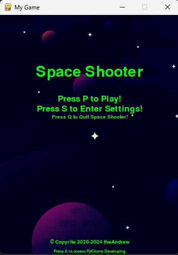
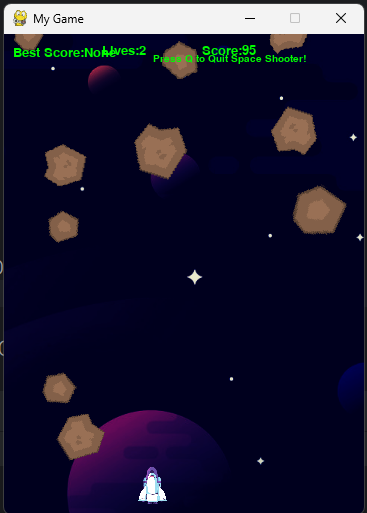
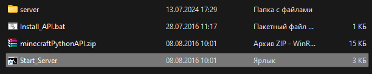

Небольшая вариация. Довольно примитивная, но рабочая. Может делать снимки с вашей вебкамеры, смотреть фото, делать заметки, смотреть календарь, слушать музыку в хорошем качестве, просматривать некоторые файлы, и устанавливать доп. приложения в своем мини-магазине
Продвинутый текстовый редактор
Неплохой текстовый редактор. Можно редактировать текст, менять размер шрифта, цвет шрифта (только для експорта в пдф), печать в пдф, вставка текущей даты и времени. Можно менять тему приложения (темная/светлая), и языки (3 встроенных по умолчанию - Русский, Украинский, и Английский). Имеет опрятный вид и простой дизайн
Небольшая игра в стиле Space Shooter


Небольшая примитивная игра. Надо уничтожать астероиды, и лечиться аптечками при ранении. Единственное чем можно "погордиться" ето музыка. Исходники вы можете найти
тут.
Небольшой код на пайтоне для запуска localhost-сервера майнкрафт. Имеет некоторые команды, функционал которых прописуется в самом пайтон-файле.

Исходник и все файлы для запуска сервера вы найдете
тут. ОБРАТИТЕ ВНИМАНИЕ! Файл Server code - написан мною. Сервер локалхост - Взят из материалов книги "Программируем с майнкрафт". Файл Server code вам надо модифицировать чтобы он работал корректно под ваши команды, т.к я писал его под свой мир и у меня в своих местах стояли командные блоки
Чтобы запустить сервер, скачайте все файлы по ссылке. Скачайте пайтон. Запустите Ярлык Start server. Откройте архив и запустите бат-файл для установки библиотек для пайтона. Если в cmd при запуске ярлыка Старт сервер вылетают ошибки - откройте в под-папке сервер файл start.bat через текстовый редактор, и вместо слова java укажите путь к вашей джава на компьютере. (Например C:\Users\Admin\Java\bin\java.exe)
Моя собственно-написанная библиотека Console.
(Фото нету)
С данной библиотекой вы можете облегчить себе задачу логирования и красивого вывода в консоль. А также експорта. Синтаксис прозрачный и библиотека писалась под всех, а не под личное использование. Увы, пока что библиотеки нету на PyPi и соотвественно через пип она не скачается. Исходник вы найдете
тут. Прошу не плагиатить, вскоре занесу библиотеку в папи и пип и удалю исходник из общего доступа. Синтаксис библиотеки вы найдетете
тут